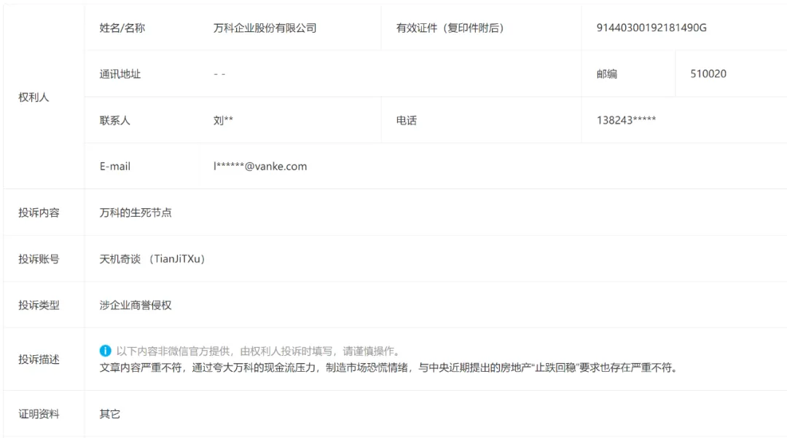

不要脸
终究是上了年纪，这两年脾气和情绪太随和了。
可能是这两年收敛了锋芒，让有些货以为我软弱可欺，好拿捏。
上一篇关于万科的推演，被万科投诉了：

以前，我对万科多少还是手下留情的，即便写了，也都尽可能地含蓄点。
现在想来，是我错了，不该如此，万科早已经不是那个万科。如同《金瓶梅》中，同样是“西门官人”，前中期是指西门庆，末尾是指西门安，即家奴玳安。
今天我们就万科投诉的内容，就事论事展开论述：
第一，万科说“文章内容严重不符”。
我所采用的数据，全部来源于万科2018-23年度、24年1-9月财报的数据，根据每年它公开的金额数据和权益比例等，算出各项数值。
既然采用的是你万科本身公布的数据，又怎么会“严重不符”？那么，只有一种可能会导致“严重不符”，那就是万科的财报数据是错的，也就是说，万科财报数据造假，才会导致这结果。
万科，你财报数据造假了吗？如果没有，那么这“严重不符”便不成立。你们品牌部的现在这么没脑子了吗？简直跟当初恒大品牌部的一模一样。
建议换个有脑子的，以免拉低万科你的档次。
第二，万科说“夸大万科的现金流压力”。
这点其实不需要我夸大，万科现金流压力如今有多大，大家又不是眼瞎，不停地甩卖大宗资产，不停地打折销售回款，几番找你干爹深铁来站台，不就是现金流压力大的最好表述？
只有面对问题，才能解决问题，一味地掩盖问题，是没有用的，只能导致问题更加恶化。
我没有直接捅万科那些资产包潜在违约的具体情况，已经是很手下留情了，自己内部对花X湾这个百亿级资产包的情况，应该比我更清楚。
第三，“制造市场恐慌情绪”。
制造市场恐慌情绪的，是万科自身，而不是我。2018年，万科说“活下去”，随后几年，一直在抢地，抢地王，把内部工作29条原则中“不囤地、不抢地王”这类风险管控的举措抛诸脑后。
随后又是万科的郁亮等管理人员，去年和今年初，在公开市场夸夸其谈“房价已触底”、“万科很稳健”，结果这类错误的信息在随后的下跌市场中被屡次打脸。
多少听了这论调上车的人，亏麻了，导致市场（相信万科品质却被打脸的业主、众多无法顺利结款的合作商等）对万科丧失了信任感。
和恒大一样，万科自身的言行举止，才是“市场恐慌情绪”的最大制造者，别想甩锅给别人。
第四，“与中央提出的止跌回稳要求也严重不符”。
上面提出的是“止跌回稳”，而不是“救万科”，麻烦不要偷换概念、乱扣大帽。
能救万科的，最重要的还是万科自身，正视自己的问题并调整和改正，积极拥抱市场，谦逊面对业主和客户。
知错就要改，而不是碰瓷，往地上一躺，诬告是别人把你打伤的。
第五，万科的管理层，作为职业经理人确实权柄过大，没有被有效约束和限制不说，出了问题，至今也没有一人出来承担责任和后果。
万科的职业经理人，玩得那叫一个花呀，颇有“以奴代主”的姿态。这部分我改天再一个个写，2万字的篇幅都写不完。
《金瓶梅》一书中，玳安为西门庆鞍前马后跑腿儿办差， 精明乖滑、 办事利索、 善于揣摩、迎合主子的心意，常常圆满完成任务来赢得主子的青睐，成为西门庆最宠爱的小厮。
西门庆看上了他的机俐能干，把玳安作为自己荒淫无度私生活中最得力的帮手。
就是这样的家奴，却在西门庆生前偷吃他的女人，在西门庆暴死后又改名“西门安”承袭了他的家业，真可谓《金瓶梅》里最重要、最成功的奴才 。
按日期浏览全部来源（同日按条目标识排序）